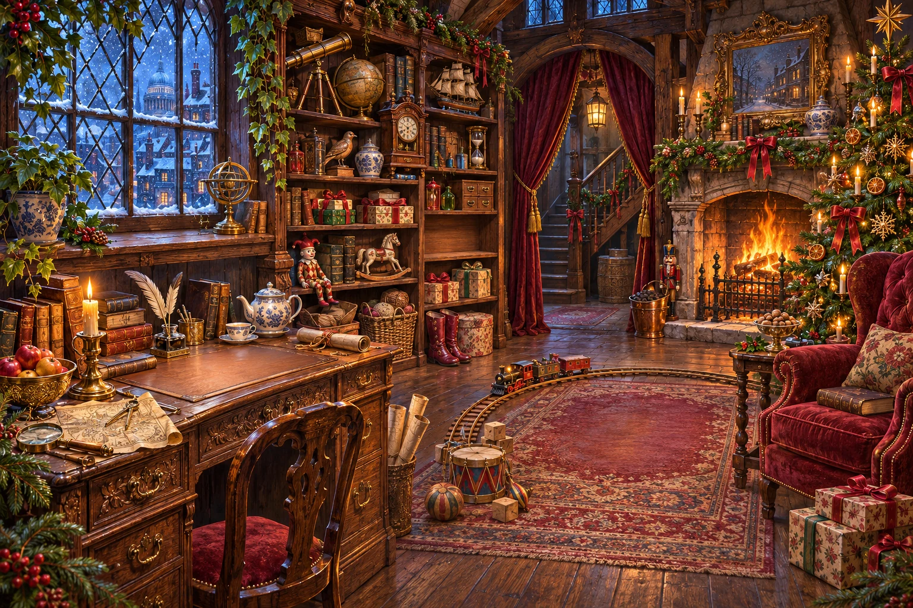

Step into an illustrated Christmas mystery.Find what was lost. Help someone belong.
Scrooge remembers the warmth of belonging.The story is only beginning.
The full game follows Christmas Past, Present and Future through nine kind moments. Three abilities. One changing heart.
Complete nine levels. Privately discover a colleague to surprise. Arrange a thoughtful gift up to ৳2,000. Keep your Santa identity secret until the physical celebration.
This is a single-player presentation build with one playable chapter. No real accounts, purchases, assignments or global leaderboard. Progress resets on refresh. Original concept artwork; no assets copied from the reference game.
Optional curiosities are for discovery, with no extra points. Hints and retries are free. Use the scene tabs and zoom buttons to explore. An object list provides an alternative to visual searching.
This clears only this demo’s nickname, inventory and progress.
Choose a place. Nothing is timed. Every little discovery can wait for you.